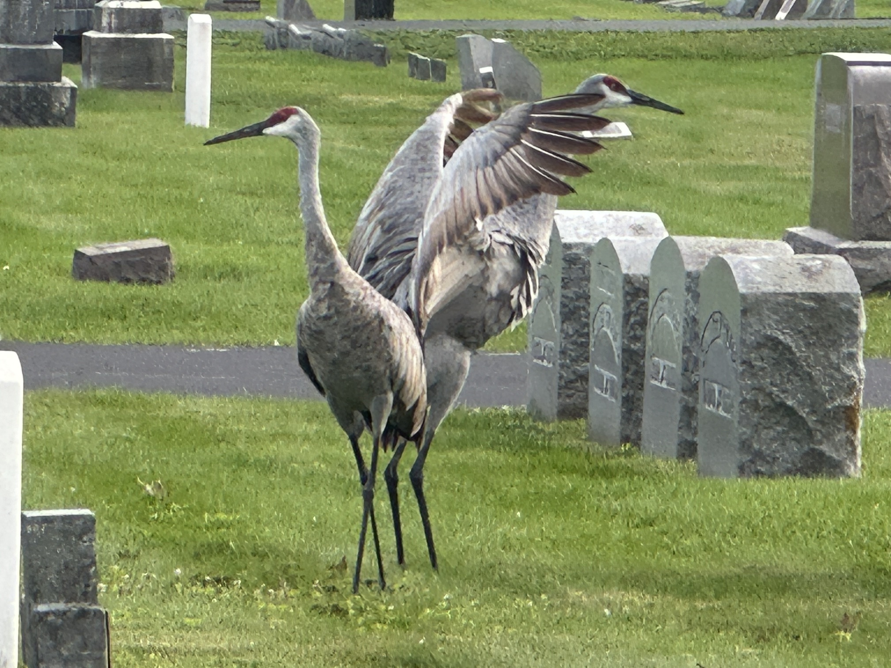
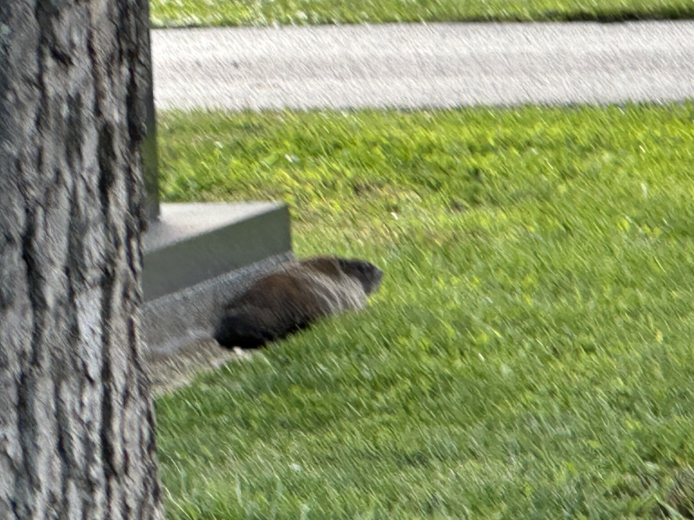
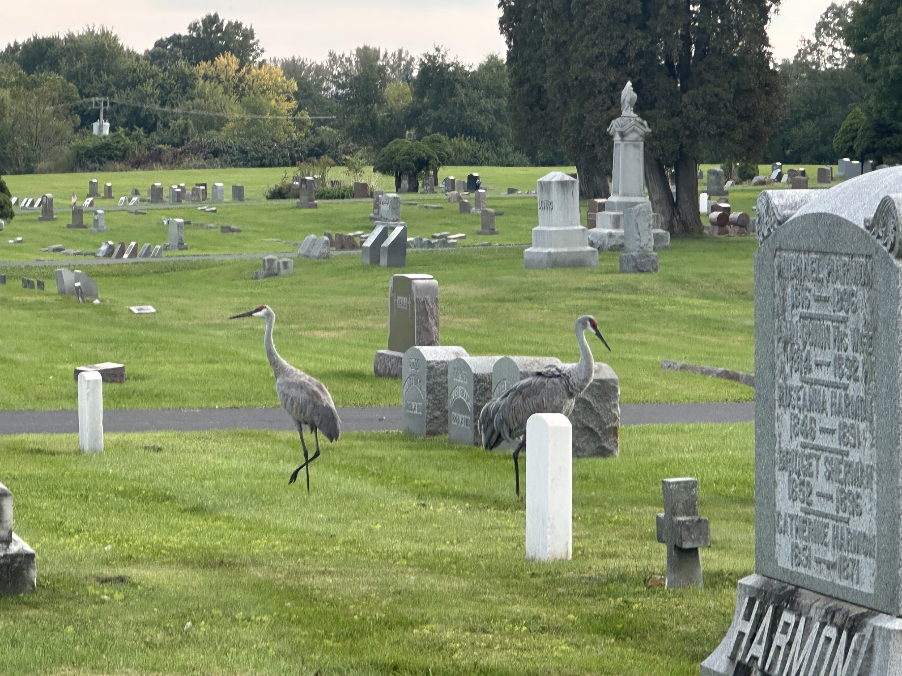
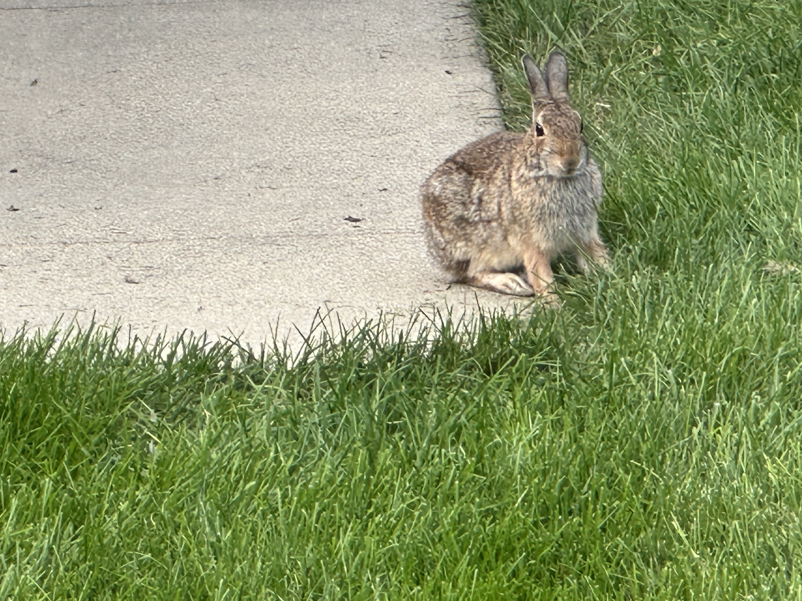
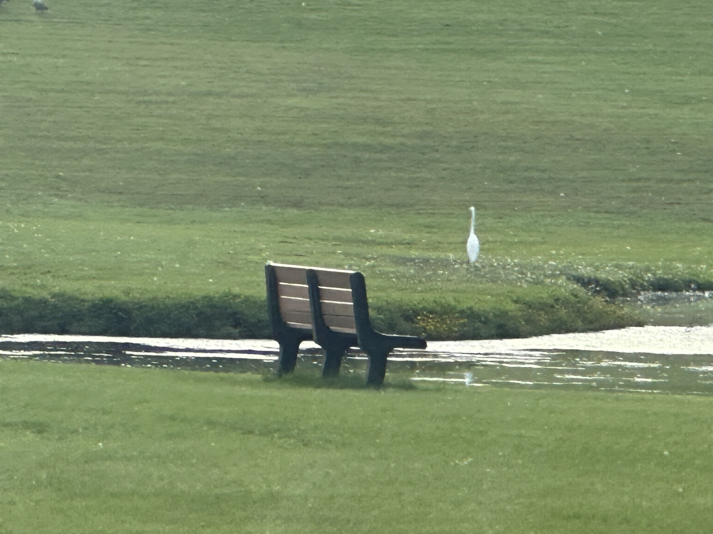
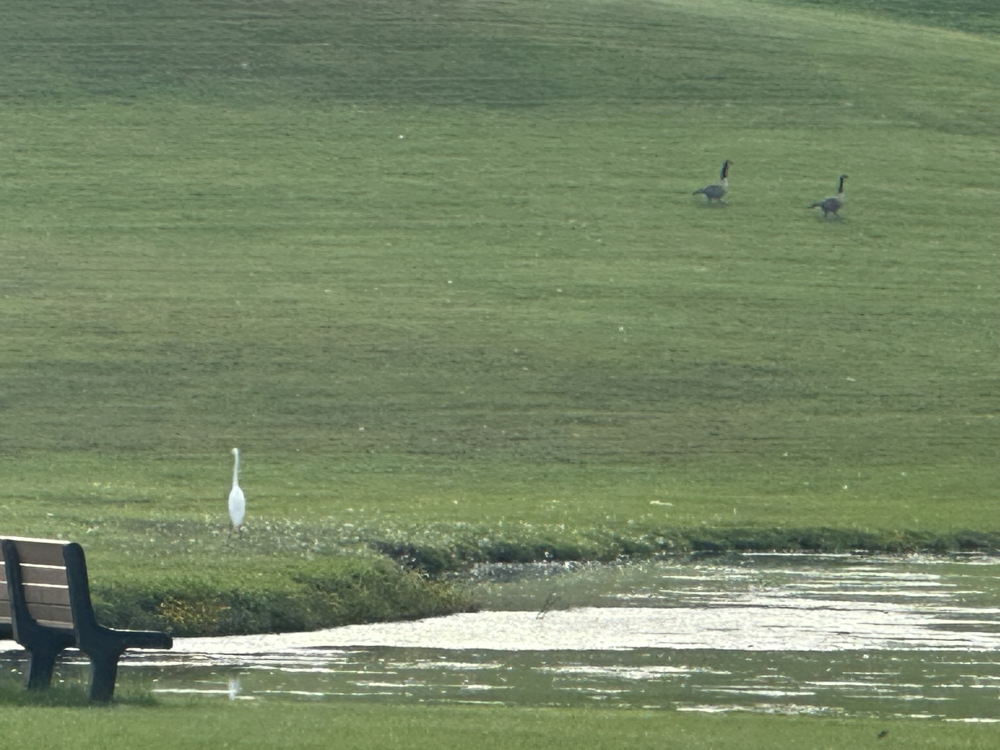
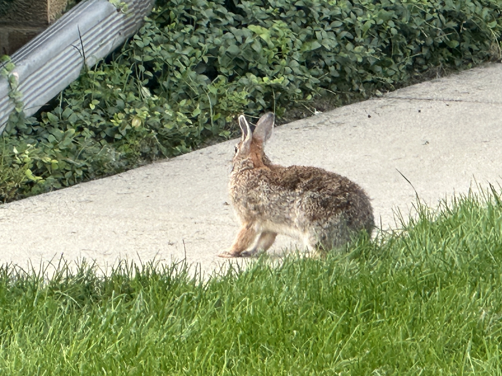

Nature Grid Gallery
Background color
White
Yellow
Red
Sky blue
Pink
Dark mode
Custom hex color
Apply color

Two Sandhill cranes in a grassy area at Calvary Cemetery in Woodstock, Illinois, with a quiet cemetery landscape in the background.





